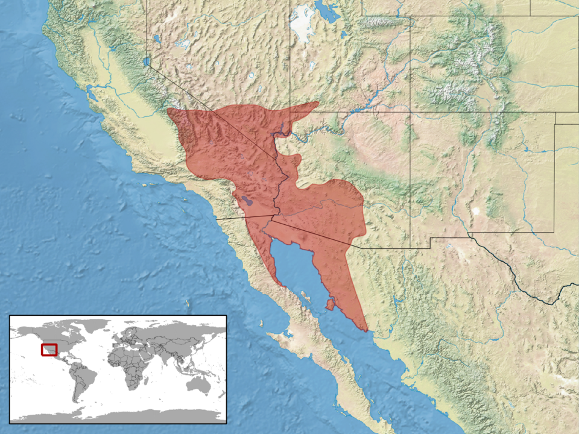

Quick Facts
- Size: 1.5-2.5 feet
- Weight: 3-6 ounces
- Lifespan: 10-20 years
- Conservation Status: Least Concern
- Range: Mojave and Sonoran deserts of the southwestern U.S. and Mexico
Key Nighttime Adaptations
They have amazing infrared vision and are capable of detecting warm-blooded prey even in complete darkness. Their unique lateral winding motion allows them to maintain minimal contact with the scorching desert sand.
Diet
The sidewinder rattlesnake is a carnivore whose diet is primarily small rodents and lizards, dependent on the season.
Role in Ecosystem
As predators, sidewinders control rodent populations, preserving the scarce desert vegetation. These snakes are a great food source for larger predators such as owls and road runners.
Fun Fact: Sidewinders use their own bodies as bowls to harvest rain and morning dew.


Light Pollution's Effect on Sidewinder Rattlesnakes
Excess light exposure can take away their element of surprise on unsuspecting prey. Being that they primarily hunt by ambushing their prey, without surprise on their side, their hunts are more likely to be unsuccessful. Light also makes them more visible to predators as well, causing their numbers in recent years to decrease.